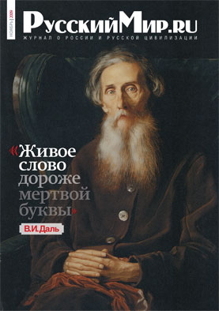

№ 5, МАЙ 2014
От редакции
«Для западного культурного человечества Россия все еще остается совершенно трансцендентной, каким-то чуждым Востоком, то притягивающим своей тайной, то отталкивающим своим варварством», – эти слова принадлежат Николаю Бердяеву, и сказаны они в 1915 году, в разгар Первой мировой войны.

Скачать (PDF, 5,4 Mb)
поДПИСКА НА ЖУРНАЛ “РУССКИЙ МИР.RU”
Во всех почтовых отделениях России: по каталогу агентства "Книга-Сервис"-"Объединенный каталог. Пресса России. Газеты и журналы". Подписной индекс 43310
В почтовых отделениях стран СНГ: по каталогам "Российская Пресса" ОАО "Агентство по распространению зарубежных изданий". Подписной индекс 43310
Через интернет-подписку: электронный каталог "Пресса по подписке" от агентства "Книга-Сервис" на сайте www.akc.ru
За рубежом: электронный каталог агентства "МК-ПЕРИОДИКА" на сайте www.periodicals.ru
Корпоративная подписка по Москве (доставка курьером): электронный каталог "Пресса по подписке" от агентства "Книга-Сервис" на сайте www.akc.ru
Задать вопрос по подписке на журнал “Русский мир.ru”
РЕДКОЛЛЕГИЯ
Георгий Бовт
Главный редактор журнала “Русский мир.ru”
Лада Клокова
Шеф-редактор
Дмитрий Борисов
Главный художник
Оксана Прилепина
Заместитель главного редактора
Елена Кулефеева
Заместитель главного редактора
Нина Осипова
Фоторедактор
Елена Мещерская
Литературный редактор и корректор